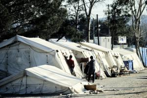

Entre todos los migrantes que llegan a Grecia, destaca el importante grupo de norteafricanos (sobre todo marroquíes, pero también argelinos y tunecinos) que aspiran a entrar en la Unión Europea por los Balcanes. Reforzada la vigilancia en el estrecho de Gibraltar, y afiladas las concertinas que coronan las vallas de Ceuta y Melilla, los ciudadanos de esos países aprovechan la existencia de vuelos baratos a Estambul (alrededor de 150 euros) y la exención de visado para volar a la capital económica de Turquía y, desde su costa mediterránea, saltar a una isla griega.
“Los marroquíes, argelinos y tunecinos son la única excepción en el registro obligatorio de migrantes [exigido por la UE a Grecia]”, explica el policía Vanguelis Kassos, coordinador del centro de extranjeros de Moria, en la isla de Lesbos. “No tienen derecho al registro”, añade. Es decir, ni siquiera al permiso mínimo, de 30 días, que sí obtienen paquistaníes, iraníes o egipcios; tampoco pueden acceder a los servicios que ofrecen los campamentos humanitarios, y si lo hacen, como en el que se levanta en la frontera greco-macedonia, es de tapadillo y gracias a algunos voluntarios.
Los norteafricanos son los primeros candidatos a la expulsión, o cuando menos a la repatriación voluntaria, que gestiona en Grecia la Organización Mundial de Migraciones (IOM, en sus siglas inglesas). O a la devolución forzosa, como dio a entender recientemente el ministro griego de Inmigración, Yanis Muzalas, cuando, al constatar “este fenómeno novedoso, masivo”, subrayó que todos los magrebíes, sin excepción, deberán abandonar el país.
Aún no hay cifras oficiales del número de llegadas de norteafricanos a Grecia desde el inicio de la crisis migratoria, pero es un fenómeno al alza. El ministro argelino de Asuntos Magrebíes, Abdelkader Messahel, emitió un comunicado el pasado 15 de enero en el que aseguraba que desde hace varias semanas se registra “un flujo masivo e inhabitual” de marroquíes procedentes de Casablanca que intentan acceder a Libia a través de Argelia. Argel asegura haber interceptado a 270 marroquíes que pretendían acceder a Libia sin visado de trabajo, informa Francisco Peregil.